本地时钟读取与显示
2024-12-05
Update history
| Date | Version | Author | Update content |
|---|---|---|---|
| 2024-12-05 | 1.0.1 | 老怪鸽 | 更新了基本文档 |
工程创建
在VSCode中打开PlatformIO扩展创建工程。
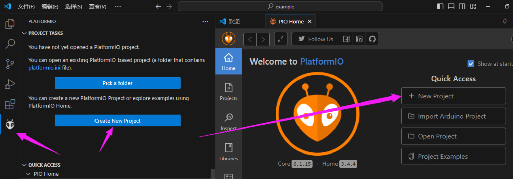
设置工程向导
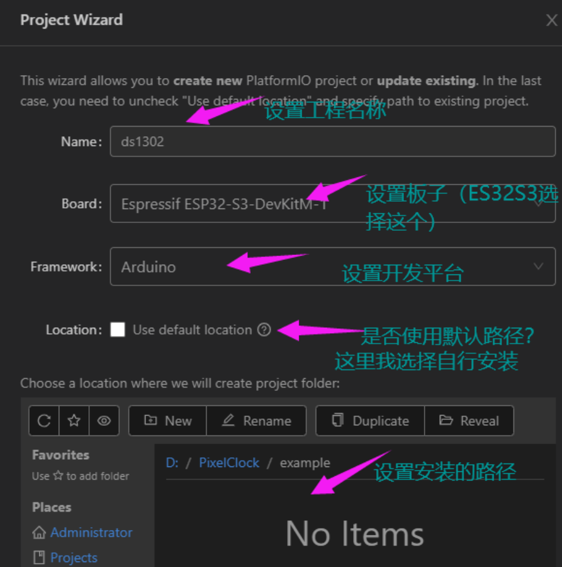

等待创建完成。
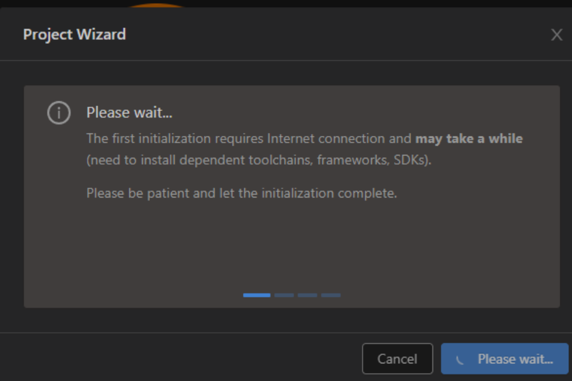
安装驱动库
创建完成之后，我们在VSCode中打开我们刚才创建的工程文件夹。
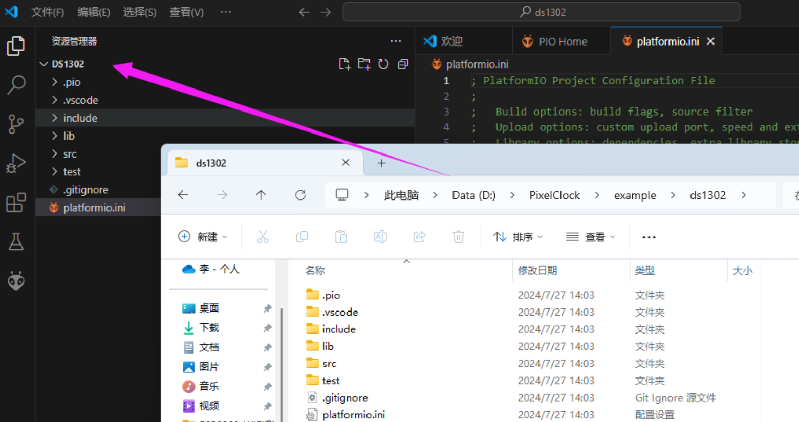
在VSCode中回到PlatformIO的主页，给工程安装DS1302的驱动库。
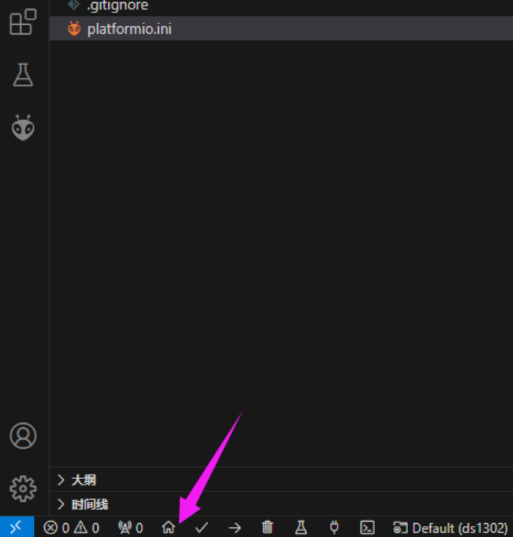
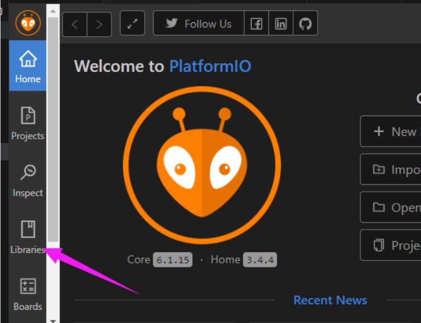
搜索DS1302，安装l来自Rafa Couto的Ds1302库。
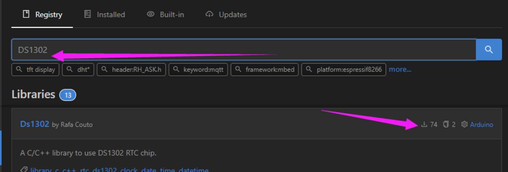
将库安装到我们的工程中。
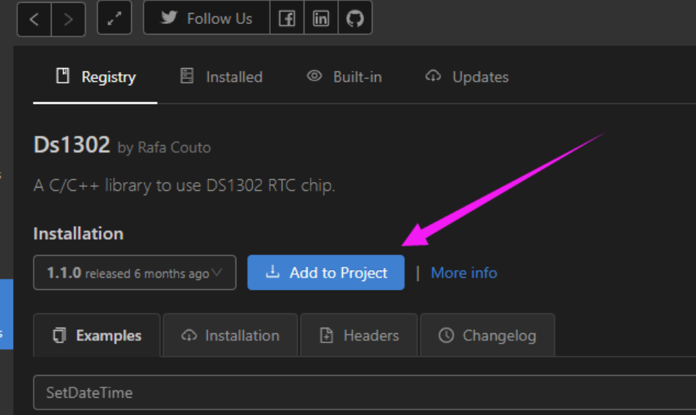
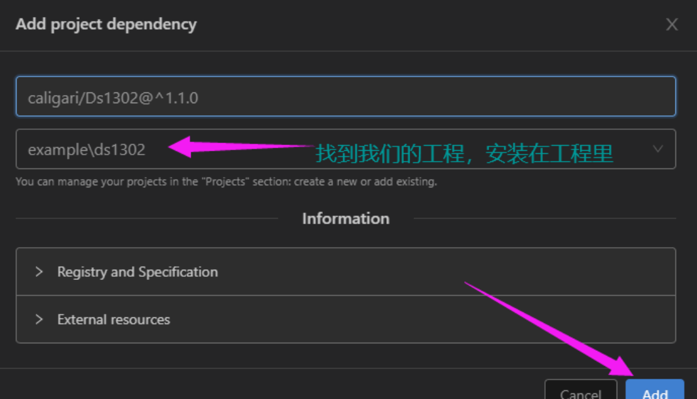
打开platformio.ini文件，可以看到已经安装上了DS1302的驱动库。
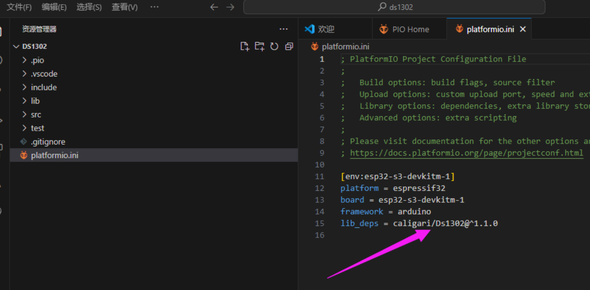
编辑代码
打开工程下的src文件夹下的main.cpp。
输入以下代码：
#include <Arduino.h>
#include <Ds1302.h>
//计时模块DS1302相关定义
#define RST 10 //ds1302的RST引脚定义
#define DATA 3 //ds1302的DATA引脚定义
#define CLK 2 //ds1302的CLK引脚定义
Ds1302 rtc(RST, CLK, DATA); //创建DS1302这个对象
void setup()
{
//初始化串口
Serial.begin(9600);
//初始化DS1302
rtc.init();
//测试时钟是否停止并设置一个日期时间来启动它
if (rtc.isHalted())
{
Serial.println("RTC is halted. Setting time...");
//创建基于DS1302库下的时间参数
Ds1302::DateTime dt = {
.year = 24,
.month = Ds1302::MONTH_JUL,
.day = 27,
.hour = 14,
.minute = 13,
.second = 0,
.dow = Ds1302::DOW_SAT
};
//将设置的时间写入DS1302模块
rtc.setDateTime(&dt);
}
else
{
Serial.println("RTC is busy.\r\n");
}
Serial.println("Time start.\r\n");
}
void loop()
{
char outputString[100]={0};
Ds1302::DateTime now;
//获取当前时间并且存储在now中
rtc.getDateTime(&now);
static uint8_t last_second = 0;
//如果秒数发生更新
if (last_second != now.second)
{
//手动更新秒数，方便下次判断
last_second = now.second;
//格式化字符串
sprintf(outputString,
"%d-%d-%d %d %d:%d:%d\r\n",
now.year+2000,
now.month,
now.day,
now.dow,
now.hour,
now.minute,
now.second );
//输出字符串
Serial.println(outputString);
}
delay(1000);
}
硬件连接
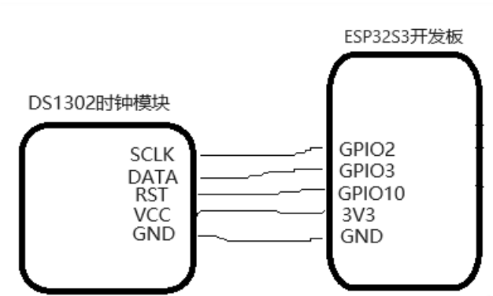
这里其实我是做了电路设计的，如果你的模块上没有RST的话应该是不用连接RST引脚的。
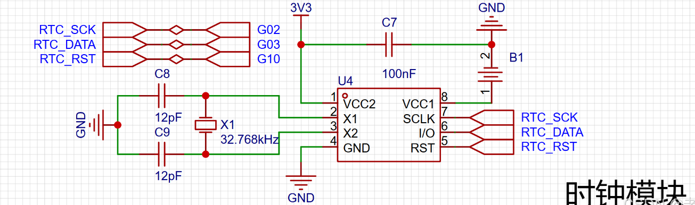
代码验证
代码编写完成之后，将ESP32S3开发板接入电脑。我当前的开发板上是CH340K的驱动，故我这里选择COM3端口。
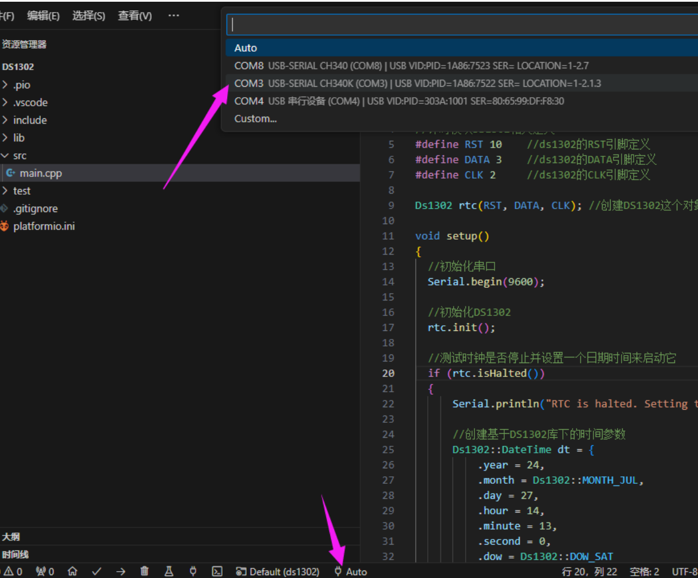
编译并下载到开发板中。
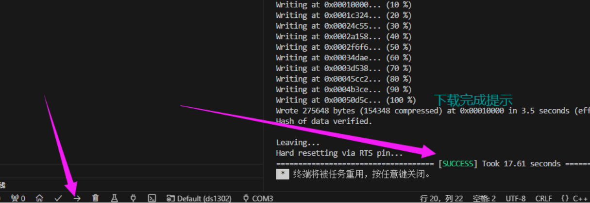
点击打开串口监视器。
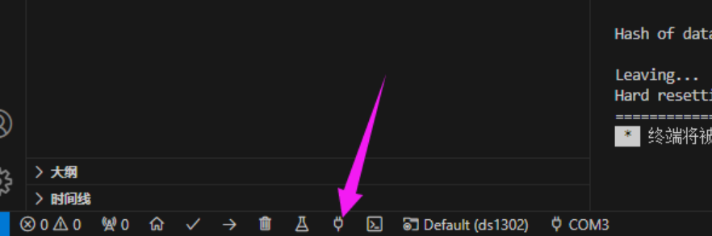
可以看到开发板可以正常的读取和设置DS1302的时间。输出正常。

说明：如果你根据代码操作运行不起来，可以下载👉例程看看